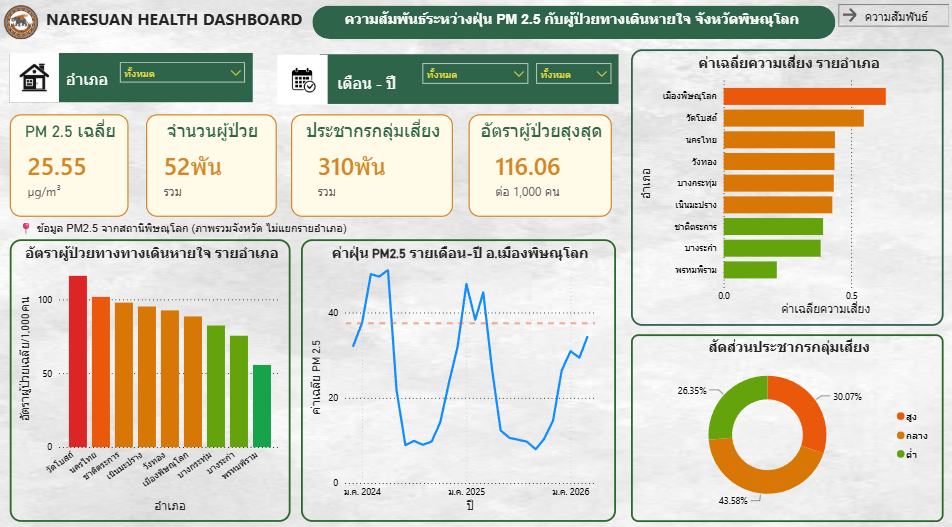
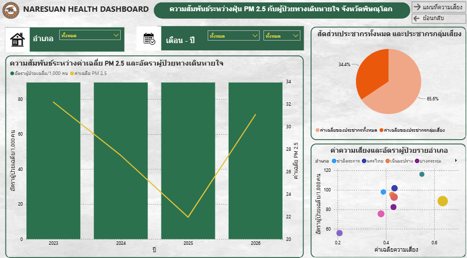
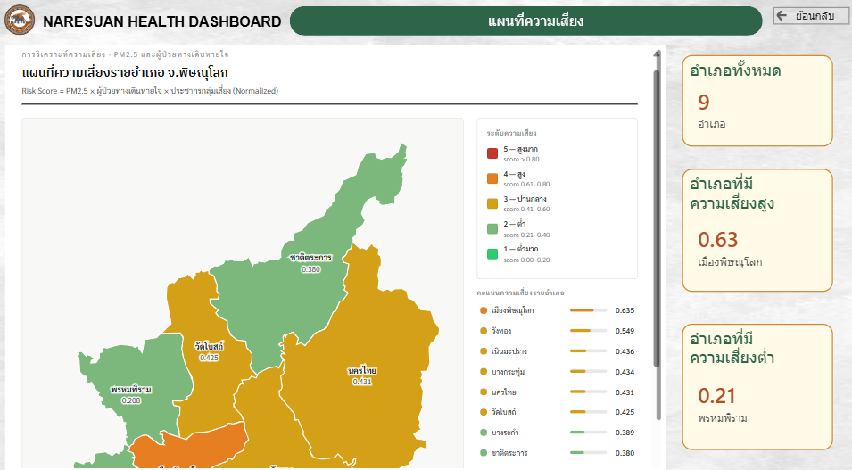

ผลงานด้าน data analytics: เตรียมข้อมูล วิเคราะห์ สร้างโมเดล และออกแบบ dashboard ทักษะหลักคือ data visualization ร่วมกับพื้นฐาน machine learning
สวัสดีค่ะ ฉันชื่อไอซ์ กำลังศึกษาอยู่ชั้นปีที่ 4 สาขา Data Science and Analytics คณะวิทยาศาสตร์ มหาวิทยาลัยนเรศวร เพิ่งผ่านการฝึกงานที่ GIST NU (สถานภูมิภาคเทคโนโลยีอวกาศและภูมิสารสนเทศภาคเหนือตอนล่าง) ทำงานวิเคราะห์ความสัมพันธ์ระหว่างฝุ่น PM2.5 กับผู้ป่วยโรคระบบทางเดินหายใจ
งานที่ถนัดและสนุกที่สุดคือการแปลงข้อมูลที่ซับซ้อนให้เป็นภาพที่เข้าใจง่าย ไม่ว่าจะเป็น dashboard ใน Power BI หรือกราฟวิเคราะห์ใน Python ส่วนงานเขียนโมเดลและโค้ดเป็นทักษะที่กำลังพัฒนาต่อเนื่อง และพร้อมเรียนรู้เพิ่มเติมในสนามจริง
ผลงานที่ได้รับการรับรองจากเวทีวิชาการและกิจกรรมด้าน data science
ผู้นำเสนอบทความวิจัยแบบบรรยาย การประชุมวิชาการระดับปริญญาตรีด้านคอมพิวเตอร์ภูมิภาคเอเชีย ครั้งที่ 13
มหาวิทยาลัยราชภัฏอุตรดิตถ์ · ก.พ. 2568Data Hack Battle: 48-Hour Data Science Hackathon หัวข้อ "Turn Data into Impact"
SCI Academic Expo 2026เข้าร่วมนำเสนอโครงงานวิจัยด้านวิทยาการข้อมูล (SCI Academic Expo) คณะวิทยาศาสตร์ มหาวิทยาลัยนเรศวร
มี.ค. 2569หลักสูตรออนไลน์ 10 ชั่วโมง โดยมหาวิทยาลัยเชียงใหม่
ก.พ. 2568เข้าร่วมกิจกรรมค่ายนักพัฒนา ร่วมกับเครือข่ายพันธมิตรด้านเทคโนโลยี
มหาวิทยาลัยนเรศวร · ก.ย. 2025โปรเจกต์จริงตั้งแต่การเก็บ-เตรียมข้อมูล วิเคราะห์ ไปจนถึงสร้างโมเดลและ dashboard



สนใจพูดคุยเกี่ยวกับผลงาน หรือต้องการรายละเอียดเพิ่มเติม ติดต่อได้ตามช่องทางด้านล่าง